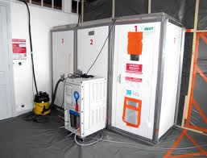
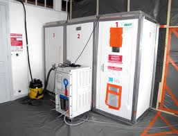

>Stratégie d'échantillonnage pour détermination des concentrations en fibres d'amiante en suspension dans l'air.
Nous vous proposons pour chacun de vos chantiers, une stratégie d'échantillonage selon la norme NF EN ISO 16000-7.
Une obligation demandée par les organismes certificateurs des entreprises de désamiantage depuis le début de l'année 2013
Nous travaillons en partenariat avec ENVIROTECH :
L'objectif de la stratégie proposée par le laboratoire :
- garantir l'indépendance du contôle de l'entreprise de désamiantage, en préconisant par avance dans la stratégie : le nombre, le lieu, le moment, la durée, et le matériel utilisé pour chaque échantillon.
- assurer une équité dans les contôles des entreprises de désiamantage, dans des règles européennes.
Vos obligations :
- Fournissez-nous le plan de retrait et les informations particulères (voisinage sensible, exigence du maitre d'ouvrage...), conviez-nous à une visite sur place.
- Contre-signez et nous retournez la stratégie pour qu'elle soit couverte par la portée de l'accréditation COFRAC.
- Prévenez-nous de l'avancement de votre chantier le plus tôt possible pour que nous puissions caler nos interventions.